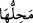
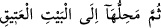

şükredesiniz diye sizin istifadenize verdik.
37. Onların ne etleri ne de kanları Allah’a ulaşır; fakat O’na sadece sizin
takvânız ulaşır. Sizi hidayete erdirdiğinden dolayı Allah’ı büyük tanıyasınız diye O,
bu hayvanları böylece sizin istifadenize verdi. (Ey Muhammed!) Güzel
davrananları müjdele!
38. Allah, îmân edenleri korur. Şu da muhakkak ki Allah, hain ve nankör olan
herkesi sevgisinden mahrum eder.
“Onlarda” hedy kurbanı olduğu bilinmesi için üzerine nişan konulan hedy
kurbanlarında “sizin için belli bir süreye kadar” o hayvanların kesildiği, etinin
tasadduk edildiği ve yendiği zamana kadar “birtakım yararlar vardır.” Bu yararlar
onların sütleri, yavruları, yünleri ve yük taşımalarıdır. Bu hedy kurbanlarının sahipleri,
kurban zamanına kadar ihtiyaç duydukça o hayvanlardan faydalanabilir.
“Sonra bunların varacakları (biteceği) yer, Eski Ev’e (Kâbe’ye) kadardır.” Yâni bu
faydalardan sonra şu büyük menfaat de vardır: O da o hayvanlar Eski Ev’e, yâni
Harem’e getirilip hazır edilmiş oldukları halde onların boğazlanma vaktinin girmesi ve
vâcib olmasıdır. Harem, Beyt hükmündedir. Çünkü “Beyt-i Atîk” ile kasdedilen
Harem’in tamamıdır. Nitekim “Bu yıllarından sonra Mescid-i Haram’a” yâni
Harem’in tamâmına “yaklaşmasınlar” (et-Tevbe, 9/28) buyrulmuştur. Çünkü Beyt ve
çevresi kurbanların kanlarının akıtılmasından uzak tutulmuş ve Mina, kurban kesme yeri
kılınmıştır.
Şüphesiz Allah’ın nişanlarında/hükümlerinde dînî faydaların en büyüğü, o kurbanların
Allah Teâlâ için hâlisâne olarak kesilmesidir. Onların vacib olarak kesilme vaktinin
büyük bir fayda kılınması, mübâlağa ifâde eder. Çünkü bir fiilin vaktinin bile pek büyük
faydaları olunca, fiilin kendisi hakkında bir düşün.
“el-Atîk” zaman, mekân ve rütbece önce olan demektir.
Kâşifî der ki: “(
) kurban kesme yeri (demektir. Buna göre “
”in mânâsı;) ya kurban kesmenin vücûbu, tûfan zamanında gark olmaktan âzâd olan
Beyt’te veya büyük/şerefli olan Beyt’te son bulur, demektir.”
Rivâyet olunur ki İbrahim (a.s.), üzerinde şu dört cümle yazılı olan bir taş buldu:
Birincisi: “Muhakkak ki yalnızca ben, Allah’ım. Benden başka ilâh yoktur. Bana kulluk
et.” İkincisi: “Muhakkak ki ben, yalnızca ben Allah’ım. Benden başka ilâh yoktur.
Muhammed rasûlümdür. Ne mutlu O’na inanan ve tâbi olana.” Üçüncüsü: “Muhakkak ki
ben, yalnızca ben Allah’ım. Benden başka ilâh yoktur. Kim bana sarılırsa kurtulur.”
Dördüncüsü: “Muhakkak ki ben, yalnızca ben Allah’ım. Benden başka ilâh yoktur.
Harem benimdir. Kâbe evimdir. Kim evime girerse azabımdan emin olur.”